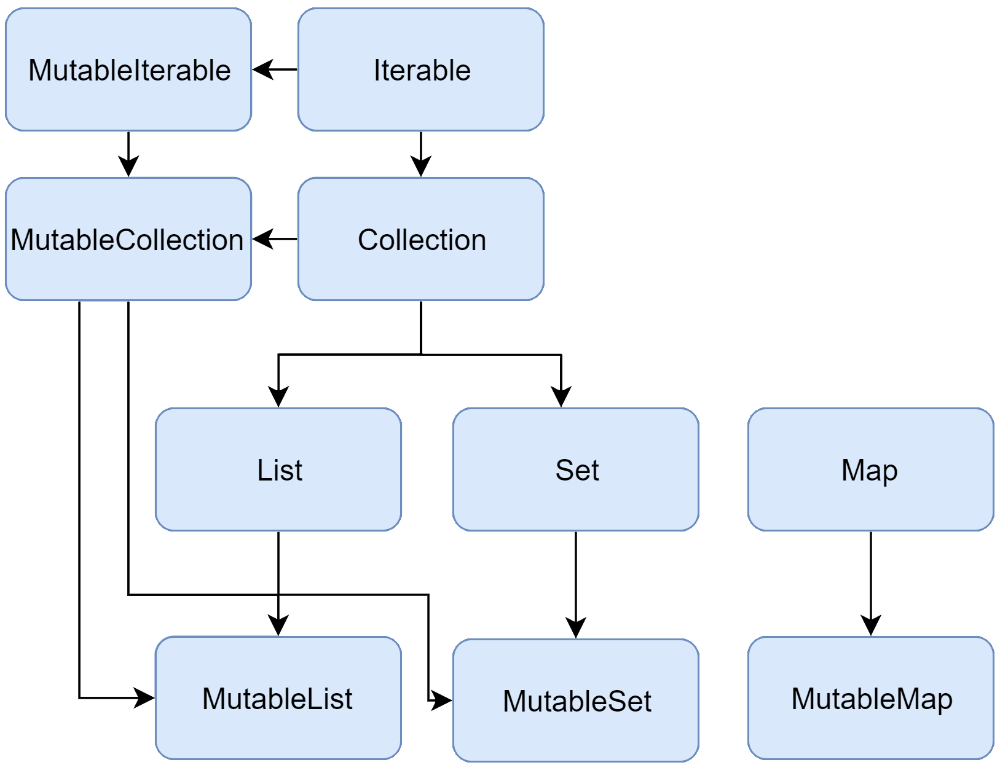

Collections overview
The Kotlin Standard Library provides a comprehensive set of tools for managing collections – groups of a variable number of items (possibly zero) that are significant to the problem being solved and are commonly operated on.
Collections are a common concept for most programming languages, so if you're familiar with, for example, Java or Python collections, you can skip this introduction and proceed to the detailed sections.
A collection usually contains a number of objects (this number may also be zero) of the same type. Objects in a collection are called elements or items. For example, all the students in a department form a collection that can be used to calculate their average age.
The following collection types are relevant for Kotlin:
- List is an ordered collection with access to elements by indices – integer numbers that reflect their position. Elements can occur more than once in a list. An example of a list is a telephone number: it's a group of digits, their order is important, and they can repeat.
- Set is a collection of unique elements. It reflects the mathematical abstraction of set: a group of objects without repetitions. Generally, the order of set elements has no significance. For example, the numbers on lottery tickets form a set: they are unique, and their order is not important.
- Map (or dictionary) is a set of key-value pairs. Keys are unique, and each of them maps to exactly one value. The values can be duplicates. Maps are useful for storing logical connections between objects, for example, an employee's ID and their position.
Kotlin lets you manipulate collections independently of the exact type of objects stored in them. In other words, you add a String to a list of Strings the same way as you would do with Ints or a user-defined class. So, the Kotlin Standard Library offers generic interfaces, classes, and functions for creating, populating, and managing collections of any type.
The collection interfaces and related functions are located in the kotlin.collections package. Let's get an overview of its contents.
Collection types
The Kotlin Standard Library provides implementations for basic collection types: sets, lists, and maps. A pair of interfaces represent each collection type:
- A read-only interface that provides operations for accessing collection elements.
- A mutable interface that extends the corresponding read-only interface with write operations: adding, removing, and updating its elements.
Note that altering a mutable collection doesn't require it to be a var: write operations modify the same mutable collection object, so the reference doesn't change. Although, if you try to reassign a val collection, you'll get a compilation error.
val numbers = mutableListOf("one", "two", "three", "four")
numbers.add("five") // this is OK
println(numbers)
//numbers = mutableListOf("six", "seven") // compilation error
The read-only collection types are covariant. This means that, if a Rectangle class inherits from Shape, you can use a List<Rectangle> anywhere the List<Shape> is required. In other words, the collection types have the same subtyping relationship as the element types. Maps are covariant on the value type, but not on the key type.
In turn, mutable collections aren't covariant; otherwise, this would lead to runtime failures. If MutableList<Rectangle> was a subtype of MutableList<Shape>, you could insert other Shape inheritors (for example, Circle) into it, thus violating its Rectangle type argument.
Collection
Let's walk through the interfaces and their implementations. To learn about Collection, read the section below.
Collection<T> is the root of the collection hierarchy. This interface represents the common behavior of a read-only collection: retrieving size, checking item membership, and so on. Collection inherits from the Iterable<T> interface that defines the operations for iterating elements. You can use Collection as a parameter of a function that applies to different collection types. For more specific cases, use the Collection's inheritors: List and Set.
fun printAll(strings: Collection<String>) {
for (s in strings) print("$s ")
println()
}
fun main() {
val stringList = listOf("one", "two", "one")
printAll(stringList)
val stringSet = setOf("one", "two", "three")
printAll(stringSet)
}
MutableCollection<T> is a Collection with write operations, such as add and remove.
fun List<String>.getShortWordsTo(shortWords: MutableList<String>, maxLength: Int) {
this.filterTo(shortWords) { it.length <= maxLength }
// throwing away the articles
val articles = setOf("a", "A", "an", "An", "the", "The")
shortWords -= articles
}
fun main() {
val words = "A long time ago in a galaxy far far away".split(" ")
val shortWords = mutableListOf<String>()
words.getShortWordsTo(shortWords, 3)
println(shortWords)
}Array
val arr1 = arrayOf("C","C++","Java")
val arr2 = arrayOf(2,3,"String also allowed here",false)
val arr3 = intArrayOf(1,2,3,4,5,6)
val arr4 = floatArrayOf(3.467f,5.64f)
for(i in arr4){
println(i)
}
List
List<T> stores elements in a specified order and provides indexed access to them. Indices start from zero – the index of the first element – and go to lastIndex which is the (list.size - 1).
fun main() {
val numbers = listOf("one", "two", "three", "four")
println("Number of elements: ${numbers.size}")
println("Third element: ${numbers.get(2)}")
println("Fourth element: ${numbers[3]}")
println("Index of element \"two\" ${numbers.indexOf("two")}")
}
List elements (including nulls) can duplicate: a list can contain any number of equal objects or occurrences of a single object. Two lists are considered equal if they have the same sizes and structurally equal elements at the same positions.
data class Person(var name: String, var age: Int)
fun main() {
val abhay = Person("Abhay", 31)
val people = listOf(Person("Sachin", 20), abhay, abhay)
val people2 = listOf(Person("Sachin", 20), Person("Abhay", 31), abhay)
println(people == people2)
abhay.age = 32
println(people == people2)
}
true false
MutableList<T> is a List with list-specific write operations, for example, to add or remove an element at a specific position.
fun main() {
val india = mutableListOf<String>();
india.add("Sachin");
india.add("Virender");
india.add("Rahul");
india.add("MS Dhoni");
india.add("Virat Kohli");
india.add("Rohit Sharma");
println(india.isEmpty());
println("Size ${india.size}");
println("First element : ${india.first()}");
println("Last Element : ${india.last()}");
val firstPlayer = india[0];
println("--firstPlayer = ${firstPlayer}");
val secondPlayer = india.get(1);
println("--SecondPlayer = ${secondPlayer}");
val openers = india.slice(0..1);
println(openers);
println(openers.joinToString());
println("Rahul contains = ${india.contains("Rahul")}")
india.remove("Rahul");
println("Rahul contains now = ${india.contains("Rahul")}")
india.removeAt(1);
println("--removed item ${india}")
india[0] = "Sanath Jaysurya";
for ((index, player) in india.withIndex()) {
println("$index --- $player");
}
}
Output
false Size 6 First element : Sachin Last Element : Rohit Sharma --firstPlayer = Sachin --SecondPlayer = Virender [Sachin, Virender] Sachin, Virender Rahul contains = true Rahul contains now = false --removed item [Sachin, MS Dhoni, Virat Kohli, Rohit Sharma] 0 --- Sanath Jaysurya 1 --- MS Dhoni 2 --- Virat Kohli 3 --- Rohit Sharma
As you see, in some aspects lists are very similar to arrays. However, there is one important difference: an array's size is defined upon initialization and is never changed; in turn, a list doesn't have a predefined size; a list's size can be changed as a result of write operations: adding, updating, or removing elements.
In Kotlin, the default implementation of List is ArrayList which you can think of as a resizable array.
Set
Set<T> stores unique elements; their order is generally undefined. null elements are unique as well: a Set can contain only one null. Two sets are equal if they have the same size, and for each element of a set there is an equal element in the other set.
fun main() {
val numbers = setOf(1, 2, 3, 4)
println("Number of elements: ${numbers.size}")
if (numbers.contains(1)) println("1 is in the set")
val numbersBackwards = setOf(4, 3, 2, 1)
println("The sets are equal: ${numbers == numbersBackwards}")
}MutableSet is a Set with write operations from MutableCollection.
The default implementation of Set – LinkedHashSet – preserves the order of elements insertion. Hence, the functions that rely on the order, such as first() or last(), return predictable results on such sets.
fun main() {
val numbers = setOf(1, 2, 3, 4) // LinkedHashSet is the default implementation
val numbersBackwards = setOf(4, 3, 2, 1)
println(numbers.first() == numbersBackwards.first())
println(numbers.first() == numbersBackwards.last())
}An alternative implementation – HashSet – says nothing about the elements order, so calling such functions on it returns unpredictable results. However, HashSet requires less memory to store the same number of elements.
Map
Map<K, V> is not an inheritor of the Collection interface; however, it's a Kotlin collection type as well. A Map stores key-value pairs (or entries); keys are unique, but different keys can be paired with equal values. The Map interface provides specific functions, such as access to value by key, searching keys and values, and so on.
fun main() {
val numbersMap = mapOf("key1" to 1, "key2" to 2, "key3" to 3, "key4" to 1)
println("All keys: ${numbersMap.keys}")
println("All values: ${numbersMap.values}")
if ("key2" in numbersMap) println("Value by key \"key2\": ${numbersMap["key2"]}")
if (1 in numbersMap.values) println("The value 1 is in the map")
if (numbersMap.containsValue(1)) println("The value 1 is in the map") // same as previous
}All keys: [key1, key2, key3, key4] All values: [1, 2, 3, 1] Value by key "key2": 2 The value 1 is in the map The value 1 is in the map
Two maps containing the equal pairs are equal regardless of the pair order.
fun main() {
val numbersMap = mapOf("key1" to 1, "key2" to 2, "key3" to 3, "key4" to 1)
val anotherMap = mapOf("key2" to 2, "key1" to 1, "key4" to 1, "key3" to 3)
println("The maps are equal: ${numbersMap == anotherMap}")
}MutableMap is a Map with map write operations, for example, you can add a new key-value pair or update the value associated with the given key.
fun main() {
val numbersMap = mutableMapOf("one" to 1, "two" to 2)
numbersMap.put("three", 3)
numbersMap["one"] = 11
println(numbersMap)
}The default implementation of Map – LinkedHashMap – preserves the order of elements insertion when iterating the map. In turn, an alternative implementation – HashMap – says nothing about the elements order.